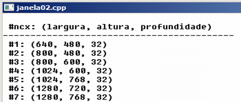

Curso completo de DarkGdk
Gameprog - Escola de programação de jogos digitais
Contato: gameprog.br@gmail.com
Fase 3.2
03.2 Obtendo a lista de modos de vídeo disponíveis
03.2 Visão geral
O usuário pode rodar sua aplicação em um computador com configuração inferior
ou ainda em condições limitadas como um netbook ou um tablet etc.
Então é importante que sua aplicação verifique as condições do hardware aonde
está sendo rodada e que se adapte aos limites dessas condições quando isto
não comprometer a finalidade da mesma. Se não der pra rodar mesmo, pelo menos
sua aplicação deve sair do ar com graciosidade enquanto informa o usuário das
condições mínimas de hardware para executá-la.
Nesta seção vamos aprender como obter uma lista de modos de vídeo disponíveis
para serem usadas na função dbSetDisplayMode().
Obtendo a lista de modos de vídeo disponíveis

// janela02.cpp
// Esse programa mostra como obter a lista de video disponíveis
#include "DarkGDK.h"
void initsys();
void tst_janela02();
// Cores
int nPreto = 0;
int nBranco = 0xFFFFFF;
void DarkGDK ( void ) {
// Começo da aplicação DarkGdk
initsys();
tst_janela02();
while ( LoopGDK ( ) ) {
dbSync ( );
} // fim do while
return;
} // fim da função: DarkGDK
void initsys() {
// Esta função inicializa o sistema
dbSyncOn( ); dbSyncRate (60);
dbSetWindowOn(); // Definindo modo janela
dbSetDisplayMode(800,600,32); // Definindo o modo de vídeo
dbCLS(nBranco);
dbInk(nPreto, nBranco);
// Configurando a janela
dbSetWindowTitle("janela02.cpp");
dbSetWindowSize (800,600);
dbSetWindowPosition (320,20);
} // fim da função: initsys()
void tst_janela02 () {
// Esta função obtém a lista de modos de video disponíveis
char txt[255];
// Propriedades de vídeo
int nLargura, nAltura, nProfundidade;
int ncx; // Nosso contador básico
int nqtd; // Aqui vai a quantidade total de modos de vídeo
dbPerformChecklistForDisplayModes(); // Pesquisa modos de vídeo...
nqtd = dbChecklistQuantity(); // ...e retorna quantidade total disponível
// Cabeçalho de apresentação da lista
dbPrint(); dbPrint(" #ncx: (largura, altura, profundidade)");
dbPrint("------------------------------------------");
for (ncx=1; ncx < nqtd; ncx++) {
// Obtém largura, altura e profunidade do modo de vídeo #ncx
nLargura = dbChecklistValueA(ncx);
nAltura = dbChecklistValueB(ncx);
nProfundidade = dbChecklistValueC(ncx);
// Mostra capacidade de vídeo
sprintf(txt, " #%d: (%d, %d, %d)", ncx, nLargura, nAltura, nProfundidade);
dbPrint (txt);
} // fim do for
} // fim tst_janela02()
dbPerformChecklistForDisplayModes();
Essa função produz uma lista com todos os modos de vídeo disponíveis.
nqtd = dbChecklistQuantity();
Essa função retorna a quantidade total de modos de vídeo disponíveis.
nLargura = dbChecklistValueA(ncx);
Essa função retorna a largura do modo de vídeo referente ao índice da
lista especificado (ncx).
nAltura = dbChecklistValueB(ncx);
Essa função retorna a altura do modo de vídeo referente ao índice da
lista especificado (ncx).
nProfundidade = dbChecklistValueC(ncx);
Essa função retorna a profundidade de cor do modo de vídeo referente ao
índice da lista especificado (ncx).
Nas funções acima o argumento ncx que representa um índice de acesso a
um item numa lista e o valor de retorno são do tipo int.